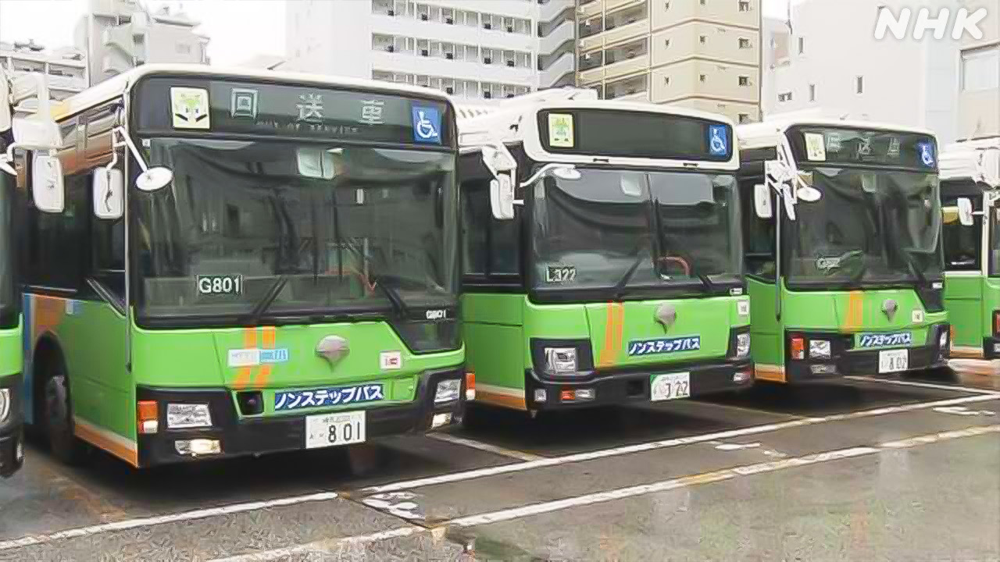

最新ニュース
1️⃣ 東京都など バスに使う軽油を買えなくて困っている

アメリカなどとイランの戦いが続いて、日本に入ってくる原油が少なくなっています。
バスに使う軽油の値段も高くなって、バスを走らせている市などは困っています。
NHKが調べると、4月から使う軽油の入札をして、どの会社から買うか、決まらなかった市などがありました。
26日までに東京都や京都市など、10、ありました。東京都の人は「軽油の値段が大きく動いています。バスを走らせることをいちばん大事に考えたいです」と話しています。
京都市は、4月に使う軽油を、3月の2倍の値段で買うことを決めました。
2️⃣ リニア中央新幹線 静岡県の知事「できるだけ早く始めることを決めたい」
リニアモーターカーを使った「リニア中央新幹線」についてのニュースです。
リニア中央新幹線は、JR東海が工事を進めていますが、静岡県では始まっていませんでした。
前の知事が、山にトンネルを掘ると川の水が少なくなるなど環境の問題があると、反対したためです。
2024年、鈴木知事に代わって、JR東海との話し合いが始まりました。JR東海は、環境を守る工事をする方法を説明していました。
鈴木知事は、JR東海の説明を聞いて、できるだけ早く工事を始めることを決めたい、と言いました。
3️⃣ 日本に住む外国人 初めて400万人より多くなった
日本に住んでいる外国人が増えています。
国によると、去年12月に412万5000人いました。1年前より35万6000人増えて、初めて400万人より多くなりました。
中国の人がいちばん多くて93万人でした。ベトナムが68万1000人、韓国が41万7000人でした。
日本にいることができる期間が終わったあとも、日本に残っている外国人は6万8000人でした。前の年より6000人ぐらい減りました。
4️⃣ 国がためている石油 26日から出し始めた
アメリカなどとイランの戦いで、日本に入ってくる石油が少なくなっています。
政府は、国がためている石油を、26日から出し始めました。
3月と4月に、850万キロリットルぐらいを市場に出す予定です。日本で使う石油の1か月分です。
石油の会社も、ためている石油を3月16日から、15日分出しています。
両方を合わせると、今まででいちばん多い量です。
政府は、ためている石油をたくさん出して、石油が足りなくならないようにしたいと考えています。
- 〜ている / 〜でいる
- 〜など
- 使役 (〜させる / 〜せる)
- 〜がある / 〜がいる
- 〜から
- 〜や〜など
- 〜まで
- 〜までに
- 〜こと
- 〜について
- 〜ため
- 〜だけ
- 〜によると
- 〜より
- 〜ことができる
- 〜後 / 〜あと
- 〜くらい / 〜ぐらい
- 〜予定
- 〜予定だ
- 〜ようにする
- 〜ならない
- 〜ように
vebaev.github.io
Generated: 2026-03-29 22:05:45 UTC